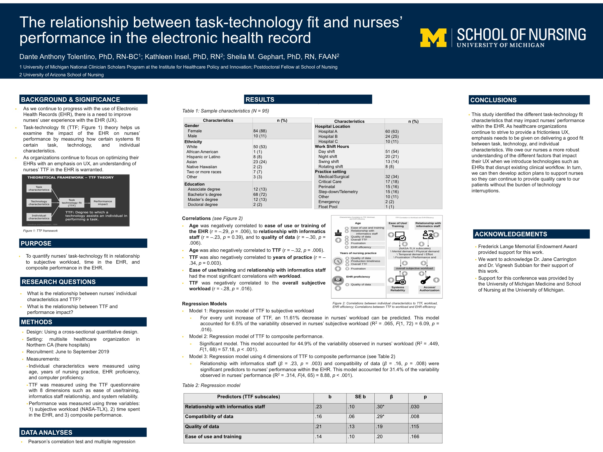

Poster · AMIA Virtual Annual Symposium · 2020
When the electronic health record fits the nurse and the task at hand, nurses tend to perform better; this study measured that fit and how it relates to workload and performance.
The electronic health record works best when it fits the task a nurse is doing and the nurse’s own skills and experience. Surveying 95 nurses, this study measured that “task-technology fit” and looked at how it relates to their workload, the time they spend in the system, and their overall performance. Understanding this fit can help organizations improve the everyday computer work that pulls nurses away from patients. As a single-snapshot study, it describes associations rather than cause and effect.
Cross-sectional quantitative study at a multisite health system in Northern California (95 nurses, recruited June to September 2019). It measured individual characteristics, task-technology fit across eight dimensions, and performance using subjective workload (NASA-TLX), time spent in the EHR, and a composite measure.
Analyses used correlation and multiple regression. As a cross-sectional design, it identifies associations rather than proving cause and effect.
How well the system fits the nurse and task is central to good performance.
The study connects fit to workload and time spent in the record.
Findings support designing EHRs around how nurses actually work.
